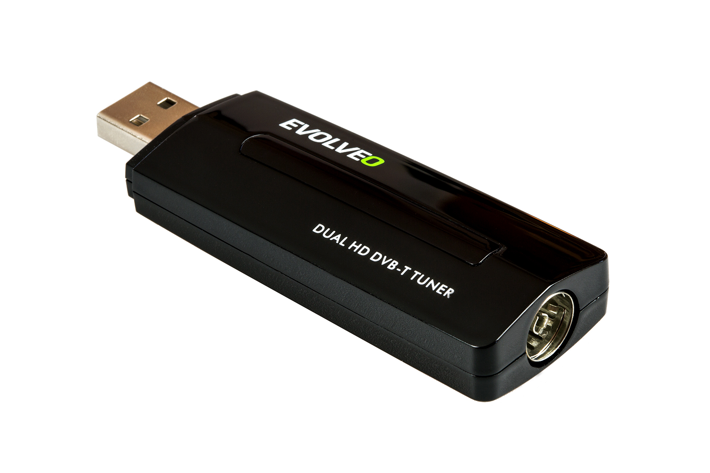
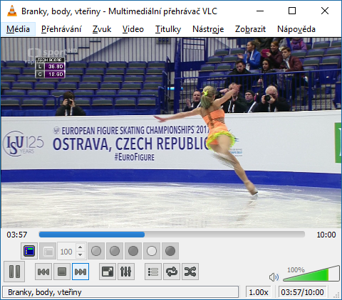
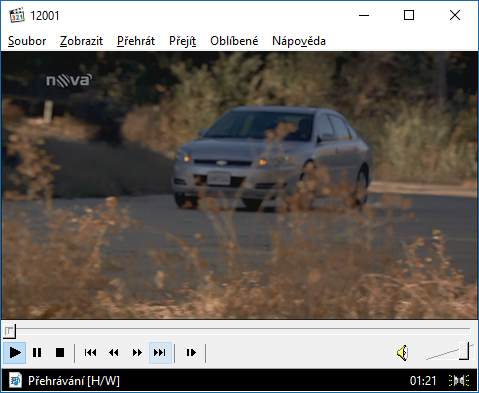
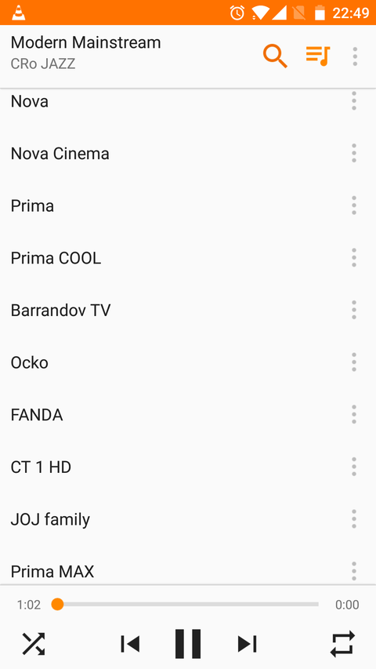

IPTV streaming
Programy
Kompletní playlist (
iptv.m3u
) je generován automaticky dle aktuální nabídky (per multiplex viz níže)
474 Mhz
playlist.m3u
482 Mhz
playlist.m3u
490 Mhz
playlist.m3u
498 Mhz
playlist.m3u
Vysílač
Notebook board ~10W
Arch linux x86_64
MuMuDVB unicast
2x Dual DVB-T tuner evolveo venus (4 multiplexy)

Přehrávače
VLC

MPC-HC

Android / iOS VLC

Windows media player